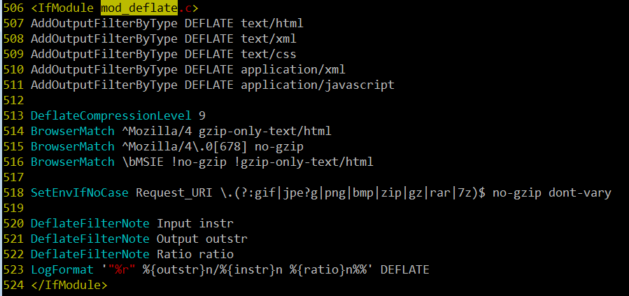
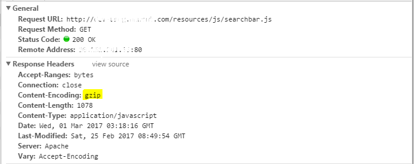
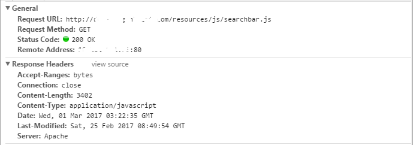
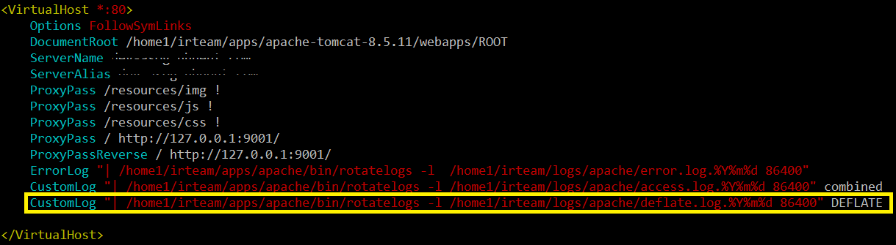
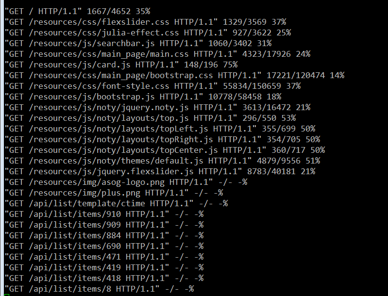

웹 최적화 (Apache mod_deflate 모듈을 이용한 압축 전송)
-읽음
Apache mod_deflate 모듈을 이용한 압축 전송
지난번 WAS와 WEB의 분리를 통해 js, css 등의 정적 파일은 apache에서 서비스 하도록 변경했다.
js, css등의 파일을 압축 전송하여 좀 더 빠르게 사용자에게 전송할 수 있다.
물론 장단점이 존재한다.
장점 : 압축전송으로 인해 좀 더 빠른 전송, 적은 네트워크 트래픽
단점 : 보낼때마다 서버의 압축과정 => 부하 가능성, 브라우저는 받아서 압축 해제해야 하는 추가 과정 필요
mod_deflate
gzip 압축전송을 하기 위해서는 apache의 mod_deflate 모듈을 사용한다. mod_deflate모듈은 apache 2.2 버전부터 기본으로 포함되어있다. 그래도 혹시모르니 httpd.conf 에서 확인해보자.
apache/conf/httpd.conf
역시 기본으로 LoadModule하고 있다
모듈 설정
이제 어떤 파일을 압축할지, 얼마나 압축할지 등의 상세 설정이 필요하다. httpd.conf에서 설정해도 되며 별도의 파일로도 분리 가능하다.
일단 같은 파일에 작성!

- AddOutputFilterByType DEFLATE {압축할 content type}
- DeflateCompressionLevel : 압축률, 높을수록 많이 압축한다
- BrowerMatch : gzip를 받아주는 브라우저도 있고 안받아주는 브라우저도 있다. 그에 관련된 설정
- SetEnvIfNoCase Request_URI {파일확장자 정규표현식} {환경변수..} : 해당 파일확장자에 대한 요청이 오면 환경변수들을 설정한다. 여기서 NoCase는 대소문자를 가리지 않겠다는 의미
- DefalteFilterNote Input : 로그 관련, 원본 파일 크기
- DefalteFilterNote Output : 로그 관련, 압축된 파일 크기
- DeflateFilterNote Ratio : 로그 관련, 압축 비율
- LogFormat : 로그 관련, 로그 출력 형태 지정
압축이 돼서 오는지 확인해보자
일단!! 현재 압축 전송이 되고 있나 확인해보자!
크롬 개발자도구에서 “Network” 탭을 열고 Ctrl + Shift + F5 를 눌러서 강력 새로고침을 누르면 js, css등 많은 파일을 받는 것을 볼 수 있다.

Requst Headers를 보면 Content-Encoding에 gzip이 표시되는 것을 확인할 수 있다.
만약 mod_deflate를 사용하지 않았다면??
httpd.conf에서 LoadModule mod_deflate.so를 주석처리하고 apache를 재실행하고 다시 페이지를 로드하면

mod_deflate를 사용하기 이전에는 그냥 js파일이 생으로 날라오고 있었다는 것을 확인할 수 있다.
실제로 압축이 얼마나 돼서 전송될까??
mod_deflate의 로그 파일을 통해 알아볼 수 있다.
virtual host에 CustomLog를 추가한다.

웹 페이지에 접속하여 apache가 파일 전송을 위해 압축을 하게되면 deflate.log가 쌓이는 것을 볼 수 있다.
내용을 살펴보면 다음과 같다.

{HTTP method} {파일경로} {HTTP 버전} {압축 후 크기 / 압축 전 크기} {압축률}
압축률을 9로 설정해서 그런지 상당히 많이 압축된다.
참고사항
- 사실 js와 css를 gzip하는거보다 minify하는게 더 효과적이라고 한다
- png, pdf 등의 파일은 이미 압축되어 있어서 압축하지 말아야 한다
- 아주 적은 json 또는 text를 반환하는 경우 압축하지 않는 것이 좋다.